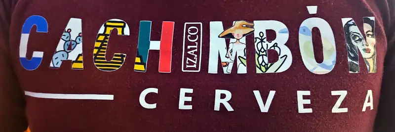
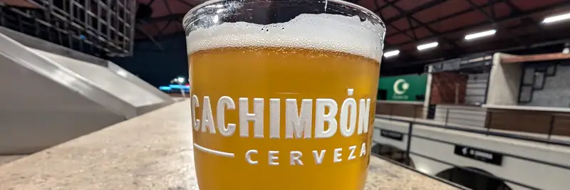

Tap del centro - Cachimbón
Después de varios años de antojarnos con sus posts de cheves, por fin se nos hizo probar las cervezas de nuestros amigos de @cachimboncerveza en su nuevo local del Mercado Municipal, a. k. a. Tap del Centro.
Estos señores comenzaron su emprendimiento, así como muchas cerveceras, por ebrios y aburrimiento, especialmente durante la pandemia, que hasta hubo escasez de cheve por un tiempo, ahí fue donde muchas marcas de cerveza artesanal, o más bien, cerveceros artesanales decidieron vender sus productos.
Ok pues, como pocas veces se puede contar algo hoy en día usando como fuente a la persona que lo hizo, lo vivió y lo sigue haciendo (sí, estoy leyendo 1984 de Orwell). Pues es, un verdadero gusto contar un poco de la historia de estos amigos que sí pues, fue por aburrimiento, si quieres llamarle así, comenzaron a hacer cerveza primero y ya como quedó buena, a venderla :D ... Los socios y cerveceros son ambos dos mexicanos, uno de ascendencia ensenadense (je) y el otro de ascendencia salvadoreña, por lo que decidieron llamar a su empresa cervecera Cachimbón que a como nos cuentan, es la primera definición que da la RAE: "Dicho de una persona: De carácter y trato afables.", pero para la calidad de productos que están sacando, yo les adjudico también la segunda: "Dicho de una cosa: Bonita y de excelente calidad." ya las otras 2 definiciones, el tiempo y tu actitud lo dirán ;) ...
Tocó la "casualidad" de que traían una de sus camisetas que tiene, pues muy interesantes historias que contar:
 {kind=link}
- C Los colores azul, blanco y azul de la bandera de El Salvador
- A Un nopal, que normalmente asociamos con México
- C La pirámide de Chicén Itzá, una de las nuevas maravillas del mundo.
- H Verde, blanco y rojo: los colores de la bandera mexicana.
- I de Izalco, nombre del volcán más joven de El Salvador y homónima de una de sus cervezas que ya ha sido galardonada con 3 medallas de oro en diferentes competencias internacionales.
- M y N representaciones de la leyenda de Ciguanaba, siendo la M el jóven Cipitio (también el nombre de su Blonde Ale) y la N su madre, la princesa Sihuhuet
- B Flor de izote, una planta reconocida como un símbolo nacional de El Salvador.
- O Torogoz, ave nacional de El Salvador.
En esta foto está la Capitán, una Golden Ale, que como ellos mismos la describen, fácil de tomar y con un ligero amargor. Que por aquello de primeras impresiones, etc. .. este... está poca madre! y pues, se entiende entonces, si esta es de las "normalitas" para ellos, cómo serán las que han ganado premios? O_0 --- habrá que probar más, y sí, probamos más de las de ellos, una que se llama Haka, una pils que tiene lúpulos de Nueva Zelanda, y la Chicatana de Mayo, que es una Pale Ale; todas refrescantes y sabrosas!

{kind=link}
Y bueno pues, no todo en el tap es de los cachimbones, también probamos una porter que estaba en. su. pun. to. y una de mango que sirven con el vaso escarchado que estaba... no, no.. peligrooooosa porque sabe como entre dulce y salada más el escarchado de tajín? nah... terminas en el suelo sin darte cuenta!
Y qué es pura cheve lo que sirven? -- pues, no, también tienen un par de vinos de Vinícola Total, del valle de San Vicente. Y pues botanillas típicas de bar, digamos, como aceitunas y carne seca. Y la neta, para como son de .. er.. fluidos los negocios en Ensenada, no me sorprendería que te puedan servir algo de los vecinos, que por cierto, de un lado van a tener un gastrobar y del otro una cevichería.